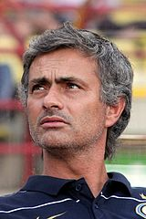
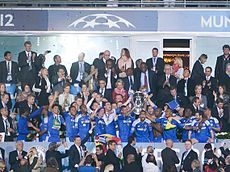
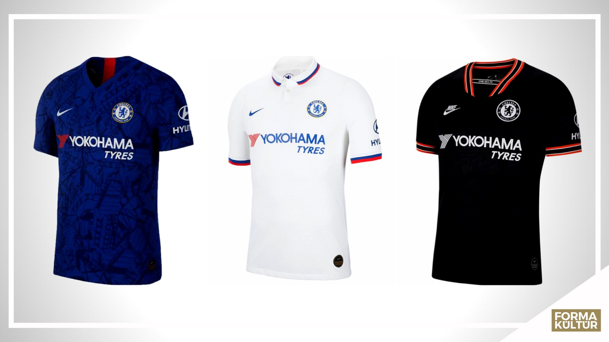

Жозе́ Ма́риу душ Са́нтуш Моури́нью Фе́лиш(Возвращение в «Челси»)-3 июня 2013 года Моуринью вернулся в лондонский «Челси»[32], подписав четырёхлетний контракт на сумму в 40 миллионов фунтов[33][34]. В первом же официальном матче под руководством Моуринью «Челси» обыграл в чемпионате Англии «Халл Сити» со счетом 2:0. В 22-м туре чемпионата Англии сезона 2013/14 Моуринью одержал с «Челси» 100-ю победу в Премьер-лиге, при этом ему это удалось сделать за наименьшее количество сыгранных матчей за всю историю турнира (142 игры).
В сезоне 2013/2014 Моуринью установил рекорд по количеству выходов в полуфинал Лиги чемпионов, «Особенный» сделал это в восьмой раз, побив старое достижение Алекса Фергюсона, которому удавалось семь раз доходить до 1/2 финала престижного турнира[35]. Однако путь к финалу для «Челси» преградил мадридский «Атлетико».
1 марта 2015 года «Челси» выиграл первый трофей после возвращения Моуринью, переиграв в финале Кубка лиги «Тоттенхэм Хотспур» (2:0). В том же сезоне «Челси» в пятый раз в истории (и третий раз под руководством Моуринью) выиграл чемпионат Англии.
Однако следующий сезон складывался для «синих» крайне неудачно: команда проиграла 9 из 16 матчей и расположилась в нижней части турнирной таблицы. 17 декабря 2015 года после 16-го тура, по итогам которого команда заняла 16-е место в турнирной таблице, Моуринью был уволен с поста главного тренера, с возможностью выплаты зарплаты 16,5 млн евро до конца сезона
Жозе Моуринью — самый успешный тренер в истории «Челси»

Игроки «Челси» празднуют победу в Лиге чемпионов УЕФА.
19 мая 2012 года

форма «Челси» сейчас